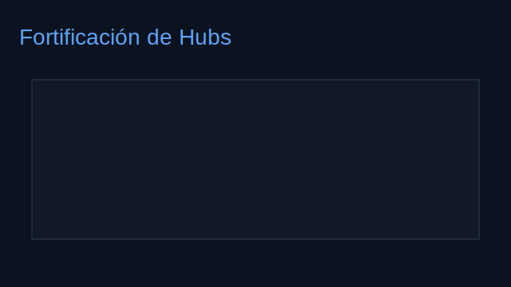
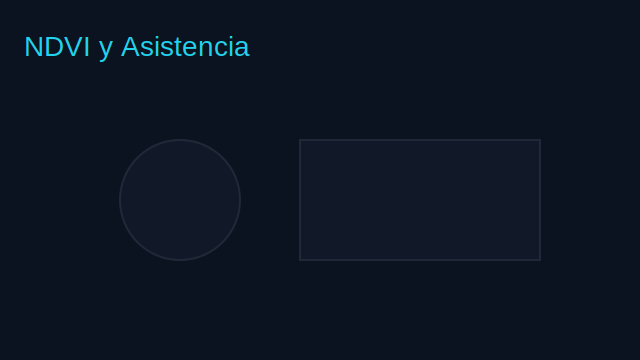
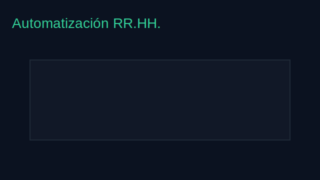

Proyectos
Selección de proyectos representativos. Cada ficha incluye descripción, objetivos, tecnologías, código (si aplica) y reflexión.
1) Fortificación de Hubs post-disrupción
Descripción
Modelo binivel para localizar y fortificar hubs (aeropuertos) con el objetivo de maximizar la cobertura ante escenarios de disrupción. El líder decide localización/fortificación y el seguidor modela la interdicción.
Objetivos
- Maximizar cobertura de demanda ante disrupciones.
- Evaluar estrategias de fortificación bajo presupuestos.
- Proveer visualizaciones de red y cobertura.
Tecnologías
Python · Gurobi · NetworkX · Matplotlib · Excel
Código fuente
Enlaza aquí tu repositorio de GitHub cuando lo publiques: (ej.) https://github.com/usuario/hubs-fortificacion
Reflexión
El proyecto fortaleció mis competencias en modelamiento entero-mixto, diseño de heurísticas y comunicación de resultados a audiencias técnicas y no técnicas.
2) NDVI y asistencia escolar
Descripción
Estudio de la relación entre verdor urbano (NDVI) alrededor de escuelas y la asistencia estudiantil en la Región Metropolitana (2013–2018).
Objetivos
- Integrar datos del MINEDUC y capas espaciales.
- Construir mapas temáticos y análisis estadístico.
- Generar recomendaciones para política pública local.
Tecnologías
R · QGIS · GeoPandas · ggplot2 · Power BI
Código/Recursos
Repositorio cuando esté disponible: https://github.com/usuario/ndvi-asistencia
Reflexión
Aprendí a combinar análisis espacial con métricas educativas, cuidando la reproducibilidad y la comunicación visual.
3) Automatización y BI en RR.HH.
Descripción
Diseño de dashboards y procesos de monitoreo para programas de formación cloud, identificando ineficiencias de financiamiento y elevando la participación.
Objetivos
- Reducir tiempos de reporte y mejorar la trazabilidad.
- Detectar fugas de recursos (≈30%).
- Impulsar participación (+80%).
Tecnologías
Power BI · Excel · Python · SQL
Recursos
Material de ejemplo anonimizados y mockups: assets/img/
Reflexión
Conecté analítica con decisiones de negocio, mejorando la comunicación entre equipos técnicos y directivos.